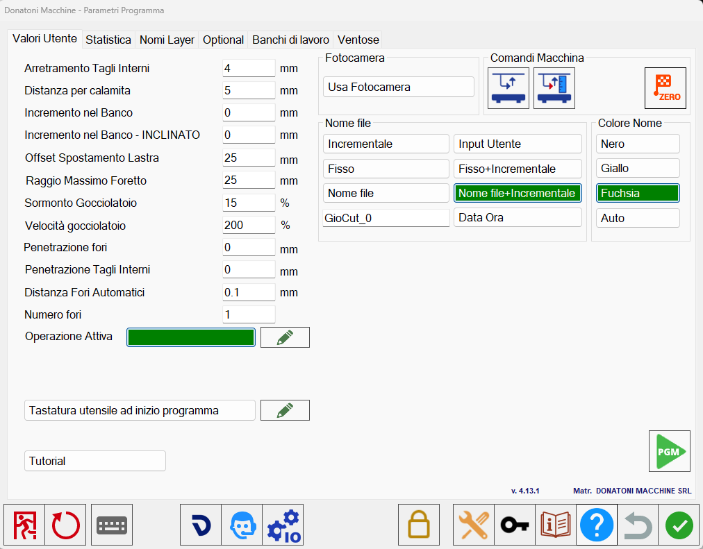

Una volta premuto il pulsante si possono visualizzare varie finestre.

Finestre
Sono disponibili 4 diverse finestre che verranno singolarmente illustrate in seguito.
Valori Utente | Finestra dedicata alla modifica di alcune impostazioni legate alle lavorazioni. |
Statistica | L’operatore può visualizzare le statistiche delle lavorazioni effettuate. |
Nomi Layer | Finestra dedicata alle impostazioni per l’importazione di file DXF su Parametrix. |
Ventose | Parametri relativi alla velocità di spostamento delle ventose. |
Barra inferiore
 | Chiudi Parametrix |
 | Riavvia Parametrix |
Tastiera | |
 | Connessione macchina fotografica |
 | Assistenza remota |
 | Parametri tecnici |
 | Inserimento password |
 | Accesso alla guida web |
 | Non salvare le modifiche |
Importazione manutenzione da file
Andando nella pagina dei parametri tecnici e successivamente nella sezione “File Path 2” , andando nella sezione relativa alla manutenzione ci troveremo di fronte alla seguente schermata:

Con il seguente bottone sarà possibile importare file .mnt per eseguire la manutenzione.
Importa da file |